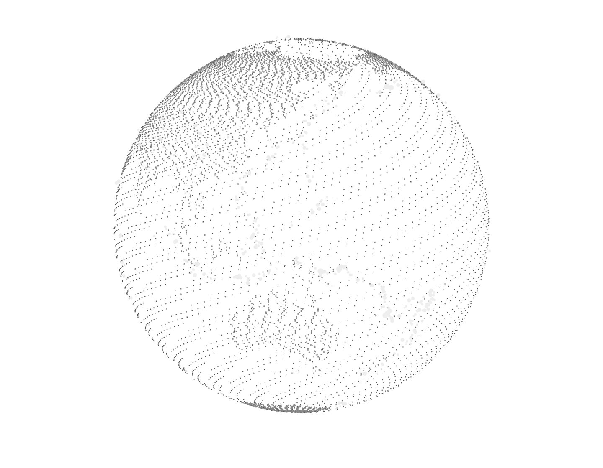
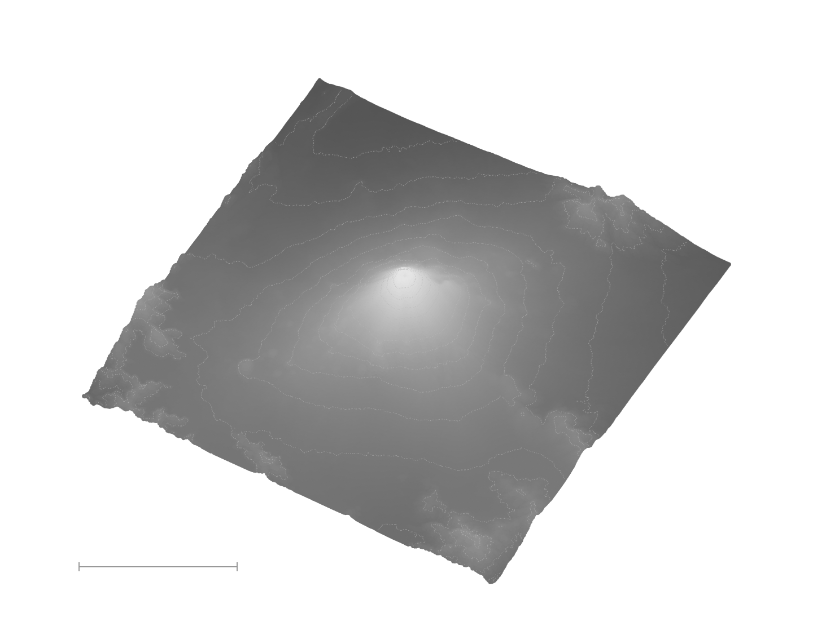

01 /FORM
FORM
形态，在颗粒中浮现。
流畅的弧线、轻薄的金属外壳与柔软的耳垫，让结构与触感成为同一种语言。
保留真实产品的外形，仅重新处理光线与材质。
Pexels / Daniel Balarezo
SOURCE ↗
SOURCE ↗
像素只改变质感，数据决定形状。
七种形态，一团不断重新聚合的颗粒。
流畅的弧线、轻薄的金属外壳与柔软的耳垫，让结构与触感成为同一种语言。
保留真实产品的外形，仅重新处理光线与材质。
鳍肢长度与体重，把三种企鹅的差异留在二维平面上。
聚集与疏散由真实测量决定，砂粒只负责让分布被看见。
八个人口最多的国家，在同一条尺度上展开。
从零开始的条形保留比例，让巨大的数字获得直观的形状。
一段完整月份里的地震记录，沿经纬度落在球面上。
明亮的点标记震中，大小区分震级，转动地球可以看到另一面。

从 1880 年到 2025 年，年度温度距平连接成一条真实折线。
起伏属于数据，细小的颗粒让时间有了可感知的纹理。
富士山的火山锥与周边山脊来自真实高程。
倾斜的视角把平面展开为空间，等高线记录每一次高度变化。

从物体到数据，从地球到山脊，游离的颗粒在此组成一个共同的标志。
许多颗粒，一部图集。